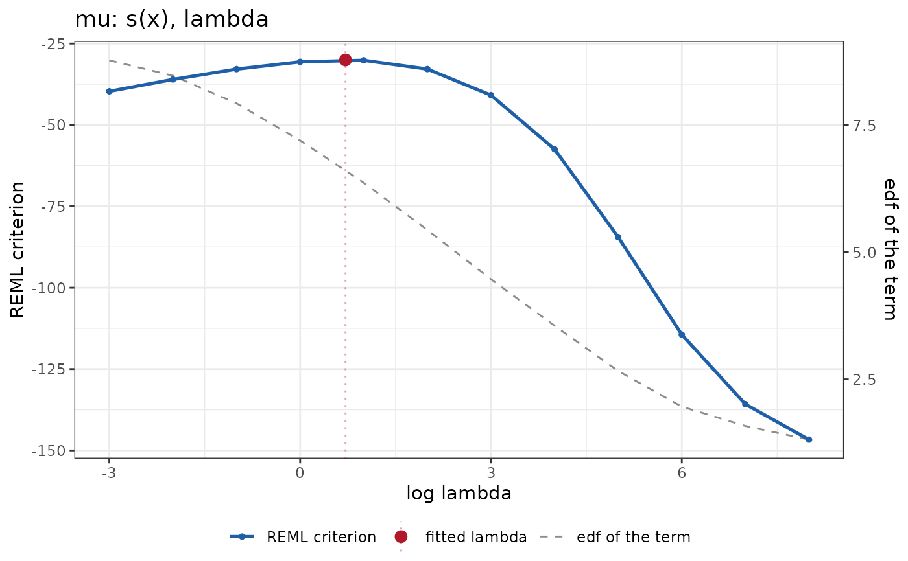

Selects the graph of the outer criterion of the fit (the criterion that
estimated the hyperparameters: reml(), ml(), aic() or bic()) as a
function of the logarithm of one hyperparameter of a term, with the other
hyperparameters held at their fitted values. The fitted value is marked, and
the effective degrees of freedom of the term are drawn on a second axis.
Value
A PlotCriterion object, inheriting from term_plot.
Details
The hyperparameter is a smoothing parameter, the precision \(\lambda\) of
a quadratic penalty, or the scale of a random effect, as the term names it
(hyper selects it when the term has several). The horizontal axis is
\(\log \theta\), with \(\theta\) the value of the hyperparameter, so
that a hyperparameter whose value is not positive has no graph. The
default grid has 41 points within five units of the fitted logarithm.
With method = "refit" the criterion is evaluated at each grid point
exactly: the model is refitted with the hyperparameter at that value, the
coefficients are warm-started at the fit, and the criterion is read at the
refitted mode, as the outer search itself reads it. The effective degrees
of freedom of the term are read at the same refit. The criterion that
reml() and ml() estimate also estimates the coefficients of an equation
for a dispersion (the sigma of a gaussian); these stay at their fitted
values. With method = "quadratic" the criterion is the second-order
expansion
\(c(\eta_0) + g\,\delta - \tfrac{1}{2} A\,\delta^2\) in the free
coordinate \(\eta = h(\theta)\), where \(h\) is the link of the
hyperparameter, \(\delta = \eta - \eta_0\), \(g\) is the exact outer
gradient and \(-A\) the exact diagonal element of the outer Hessian at the
fit; it needs reml() or ml() and shows no degrees of freedom. The
criterion is shown as the fit reports it (for reml() and ml() the log
marginal likelihood, to be maximized; for aic() and bic() the
criterion, to be minimized).
Examples
set.seed(1)
dd <- data.frame(x = runif(120))
dd$y <- sin(2 * pi * dd$x) + rnorm(120, sd = 0.3)
fit <- statmod(y ~ s(x), distributions7::gaussian1_distrib(), dd)
ggplot2::autoplot(fit, term = "s(x)",
plot_type = plot_criterion(log_lambda = seq(-3, 8, length.out = 12)))
